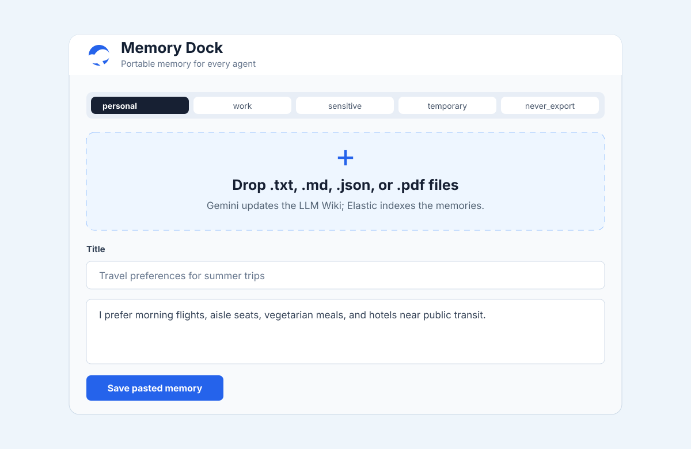
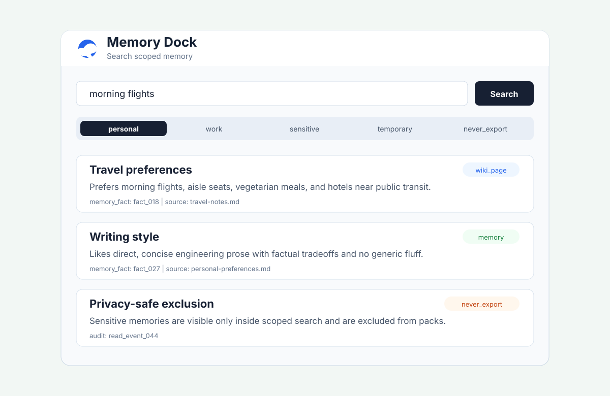
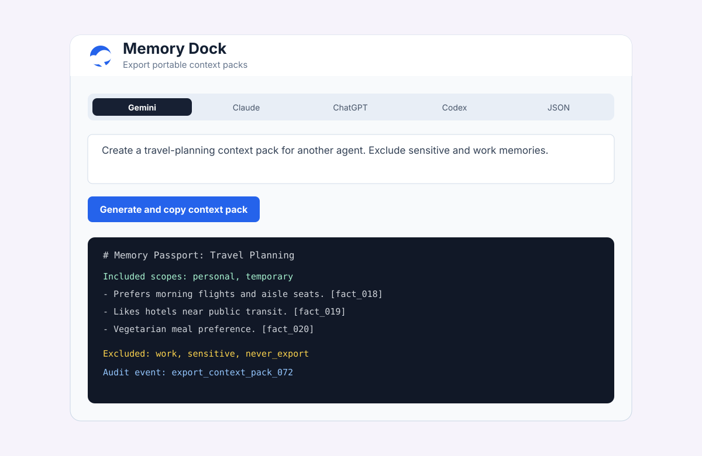
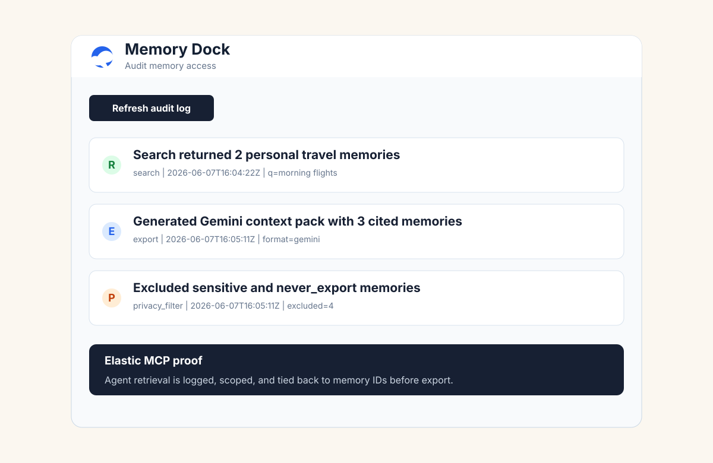

Drop markdown, text, JSON, or PDF files into the menu bar app.
Elastic Track · Google Cloud Rapid Agent Hackathon
Memory Dock
A Dropbox for agent memory. Drop files into a Mac menu bar app, let Gemini maintain a living LLM Wiki, and use Elastic MCP to retrieve portable context for any agent.
Hackathon demo build for Apple Silicon Macs running macOS 14 or newer. The app is unsigned, so use right-click -> Open if macOS Gatekeeper blocks the first launch.
Try it locally
Download the menu bar app
Judges can run the native menu bar client, connect it to the hosted API or a local API, then drop sample memory files and export scoped context packs.
1Download and unzip
MemoryDock-macOS.zip.2Right-click
Memory Dock.app and choose Open.3Use the Settings tab for your API URL, or run the included API locally.
4Drop files, search memories, and export context packs for other agents.
Product screenshots
Memory Dock keeps the main workflow inside a compact macOS menu bar window: capture, search, export, and audit.




How it works
Gemini extracts durable memories and updates a structured LLM Wiki.
Elastic stores and searches sources, facts, pages, packs, and audit logs.
Create scoped context packs for Gemini, Claude, ChatGPT, Codex, or JSON.
Why it matters
Agents should not force users to rebuild identity, preferences, and project context in every tool. Memory Dock makes memory user-owned, searchable, permissioned, and portable.